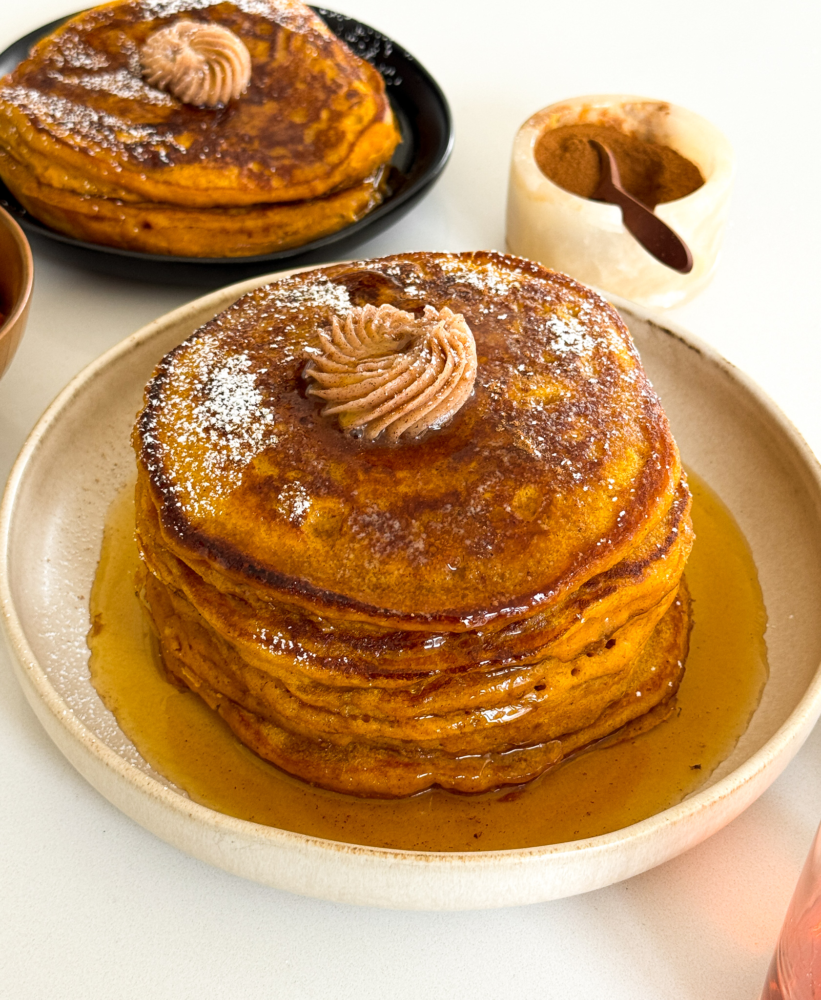

Breakfast
Pumpkin Pancakes
Prep Time: 10 minutes
Cook Time: 20 minutes
Total Time: 30 minutes
Yields: 8 pancakes
As a big Gilmore Girls fan, I knew I had to recreate the pumpkin pancakes with cinnamon butter from Luke's Diner! It's the ultimate cozy breakfast to make in the fall while rewatching some episodes!
JUMP TO RECIPEYou Might Also Like

French-Style Mash Potatoes

French Tacos (But not really tacos)